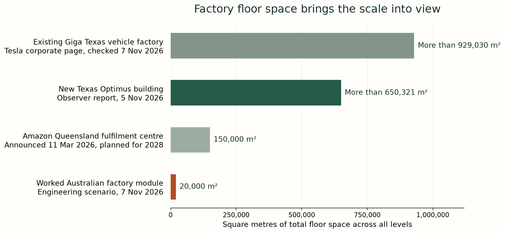

Australia can build the machines that maintain its homes, farms, water systems, power networks and public spaces. A domestic manufacturing programme would give communities equipment they can own, repair and keep operating, while supplying export customers with the same practical independence. Starting production, training and supplier qualification now gives Australia more authority over the terms of the robot economy as United States and Chinese production expands.
The physical missing middle proposed in A Fair Go in the Age of Superintelligence comprises locally governed computing racks, power, workshops and civic robots. Australian manufacturing supplies that network. Individual Auras are software that their owners can run using this capability. The Web3 sensorium is the proposed intermediary layer. Purple Party for Australia, or P4A, is the proposed civic layer. Each has a different job. The public Australian installation proposal; GAJRA Earth and the global missing middle.
Start with useful work and existing Australian capability
Australia already builds robots. The Clean Energy Finance Corporation's October 2025 case study records A$7 million committed to SwarmFarm, a Toowoomba manufacturing facility and about 200 robots then deployed in Australia. The Australian Renewable Energy Agency's project commencing 12 October 2026 supports Luminous Robotics establishing Melbourne manufacturing and scaling robots for utility-scale solar construction. These are foundations for further capacity.
The May 2024 National Robotics Strategy reported about A$18 billion of Australian robotics-company revenue in 2021. That historical figure covers a broad industry, rather than a measured humanoid production line. Queensland's manufacturing hub network, checked 7 November 2026, provides regional connections for firms that need fabrication, automation and supplier capability.
Initial civic orders could cover solar construction and maintenance, farm work, inspection, moving materials, water and stormwater maintenance, public-space care and emergency logistics. Select machines against demonstrated tasks. Wheeled platforms, industrial arms and specialist field robots can enter service alongside humanoid designs. Specify repair manuals, replaceable parts, local operating authority, interoperable interfaces and continuing access to the machine's data and controls when buying the equipment.
Tesla is already building the production system
Tesla's 22 April 2026 update described a Fremont Optimus line designed for one million robots annually and a Texas second-generation line designed for a long-term ten million annually. Its 21 October 2026 update reports production starting on Fremont's high-volume lines, classifies California as early ramp and Texas as construction, and leaves the Optimus capacity cells blank. The million and ten-million figures remain design ambitions. The October filing supplies a newer construction and production status.
Tesla's corporate Texas page, checked 7 November 2026, describes more than ten million square feet of existing factory floor, roughly 929,000 square metres, on 2,500 acres of land. That floor area describes the broader vehicle manufacturing facility. The Optimus portion of Fremont's converted Model S and Model X space is not separately sized in the reviewed updates.
In a 5 November 2026 construction report, drone observer Joe Tegtmeyer describes the new Texas Optimus building as exceeding seven million square feet, with substantial sections using four floors. Seven million square feet converts to about 650,000 square metres, or 65 hectares of total floor space across its levels. This is a reported construction-area benchmark, not a Tesla-certified floor schedule. The source is the observer's own account reproduced by an X web viewer. The calculator makes the area editable. The same observer expected limited production late in 2027 and a larger ramp through 2028; Tesla's October update supplies no completion date for the Texas factory.
Those quantities show the scale of the industrial race. The reviewed Tesla disclosures do not itemise an Optimus-only capital budget. Australian costs below are therefore built from Australian construction rates and a separate equipment ledger. They do not allocate Tesla's whole-company capital spending to one robot plant.


Put Australian floor space and costs beside the ambition
Rider Levett Bucknall's 2026 Queensland cost table, page 16, prices a 4,500 square metre, six-metre-clear industrial building in Brisbane at A$1,360 to A$1,800 per square metre with metal cladding, at fourth-quarter 2025 rates. That gives A$6.12 million to A$8.10 million for the building contract. Land, site works, fees, GST and special production equipment need separate allowances. Larger factories below use a linear first-pass application of that building rate, with their other costs itemised.
A local reference for the scale of a fitted automated building is Amazon's 11 March 2026 Queensland announcement: more than A$750 million for a planned 150,000 square metre robotics fulfilment centre across four levels, intended to finish in 2028. Its investment and floor area imply more than A$5,000 per square metre across that project. It provides a local capital comparison; the manufacturing model uses its own building, land, services and equipment quantities.
The worked Australian factory module has 20,000 square metres of total floor space. Picture a rectangle 200 metres long and 100 metres wide: two hectares under one roof. Five hectares of land allows 40 per cent site coverage, leaving room for access, freight, outside services and expansion. Of the enclosed floor, 5,000 square metres is reserved for stores, support, engineering and other fixed functions.

At the worked rates, the module contains A$32 million for its building, A$12 million for factory services, A$36 million for production and test equipment, A$7.5 million for site works, A$12.5 million for land, and A$17.5 million for design fees and contingency. Total: A$117.5 million per module, in constant late-2025 Australian dollars. Only the building rate is tied to the quantity-surveyor range. The other amounts are editable engineering allowances dated 7 November 2026. The national programme also carries a separate A$100 million shared engineering allowance.
A smaller 4,500 square metre option, reserving 1,500 square metres for support, costs A$26.4 million under the same rates and allowances. A 50,000 square metre option, reserving 10,000 square metres for support, costs A$293.8 million. These comparisons expose the space and equipment choices. A reused building needs its own purchase or lease and refurbishment budget.
Translate the Tesla benchmark into a testable local hypothesis
Ten million robots divided by the reported 650,000 square metres gives roughly 15.4 robots per square metre per year at Tesla's intended mature scale. The worked Australian case uses one quarter of that throughput per productive square metre, then applies a 75 per cent achieved-output factor. The 20,000 square metre module has 15,000 productive square metres. Its resulting annual output ceiling is about 43,250 robots. This is a 7 November 2026 engineering hypothesis, not observed Australian or Tesla production performance.
The calculator lets readers change the reference floor area, reference production target, Australian throughput, achieved output and support space. It then limits annual manufacture to the factories scheduled to be available. A larger sales or production ambition appears as an unmet factory requirement until the physical capacity is added. Components, skills, power, validated designs and committed buyers must also support the production schedule.
Domestic use and exports grow together
Adjust the manufacturing and export scenario ↑
The worked manufacturing ambition starts at 5,000 robots in 2027, multiplies annual manufacture by 2.5 through 2031 and by 1.6 thereafter. Factories begin at one module and grow by a multiplier of 1.5 each year, rounded up to complete modules. Export allocation is 35 per cent; 65 per cent stays in Australia. Permanent fleet losses use the paper's repair-preserving assumptions. Every figure in this programme is a conditional 7 November 2026 scenario.
In 2032, eight modules provide 160,000 square metres of enclosed floor. They support the scenario's 312,500 robots manufactured that year: 203,125 for domestic use and 109,375 for export. Earlier domestic batches leave about 412,000 machines in service by that year. The construction and shared engineering account totals A$1.04 billion. Three months of working capital at A$35,000 variable production cost per robot requires another A$2.73 billion. Buildings and production cash are separate funding needs.
In 2036, the same factory ramp reaches 39 modules and 780,000 square metres of total floor space. It supports about 1.687 million robots manufactured that year, against a 2.048 million ambition. Meeting the full ambition at the selected throughput requires 48 modules, nine more than scheduled. The supported batch supplies about 1.096 million domestic robots and 590,000 exports. Earlier batches leave about 3.059 million domestic machines operating, against a 3.15 million service requirement at one robot per ten residents.
The 2036 construction and shared engineering account totals A$4.68 billion. Working capital adds A$14.76 billion under the three-month assumption. At the illustrative A$50,000 factory sale price, that year's exports represent A$29.52 billion of gross sales. At A$35,000 variable production cost and 60 per cent Australian production spend, the complete domestic and export batch directs about A$35.42 billion to Australian production inputs. These are sales and spending measures, not profit or gross domestic product.
Increasing the factory rollout multiplier from 1.50 to 1.54 reaches 49 modules by 2036 and covers the 2.048 million annual production ambition under the same productivity assumptions. That faster path leaves about 3.4 million domestic robots operating by 2036 and supplies 716,800 exports in that year. The extra physical capacity changes the result. The calculator shows its extra construction funding and working capital beside it.
Make the missing middle a durable domestic customer
At 3,000 locally governed service catchments, the slower worked path's 2032 domestic fleet averages about 137 robots per catchment; its 2036 fleet averages about 1,020. Those machines can work across surrounding homes, farms, utilities and public spaces. They need local workshops, trained crews, parts inventories, software continuity and independent repair businesses. The racks and workshops support their work; they do not place the entire fleet under one remote command.
At 250 watts average wall power per operating robot, the 2036 domestic fleet needs about 6.70 terawatt-hours annually. Factory assembly and testing add about 0.84 terawatt-hours at an assumed 500 kilowatt-hours per machine produced. Upstream metals, chips and component manufacture require their own inventories. New generation, storage and network connections must meet this programme alongside fossil replacement and essential development. Robots that help build and maintain clean energy are part of the delivery capacity.
Begin with domestic service contracts and qualified production batches. Grow Australian manufacture of frames, wiring, control boards, battery packs, joints, sensors, tools and repair modules as those processes are proven. Secure diverse imported components while expanding local production and recoverable inventories. Procurement can preserve owner-held keys, local data, documented interfaces, physical isolation and the ability to disconnect.
Export machines, modules and service knowledge on terms that preserve the buyer's authority. GAJRA Earth, the Global Association for Joyful Responsible Abundance on Earth, provides Hayes's proposed international setting for that reciprocal capability. The aim is a growing network of capable communities and countries. Australia's opportunity is to become a manufacturer, designer, repairer and exporter with its own domestic productive base as the global industry grows.